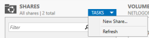
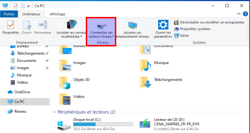

We will focus on SMB :
=> SMB comes up a lot !
Windows Server 2016
1. CMD
2. Server Manager- - Server Manager > File and Storage Service > Shares > TASKS > New Share
- Select profile : - - File share profile : SMB Share - Quick
- - Share location :
- - Type a custom path : C:\hackme
- - Share name : do nothing
- - Share name : hackme
- - Share description :
- - Local path to share : C:\hackme
- - Remote path to share : \\HYDRA\hackme
- - Other settings :
- - Enable access-based enumeration : yes
- - Allow caching of shares : yes
- - Encrypt data access : no
- - Permissions : do nothing
- - Confirmation : do nothing
- => Create
-
Windows 10 Enterprise
- - Documents > Ce PC > Ordinateur > Connecter un lecteur réseau
- 
- - Lecteur Z:
- - Dossier : \\HYDRA\hackme
- - Se reconnecter lors de la connexion : yes
- - Se connecter à l'aide d'informations d'identification différentes : no

-
AD Lab is complete :